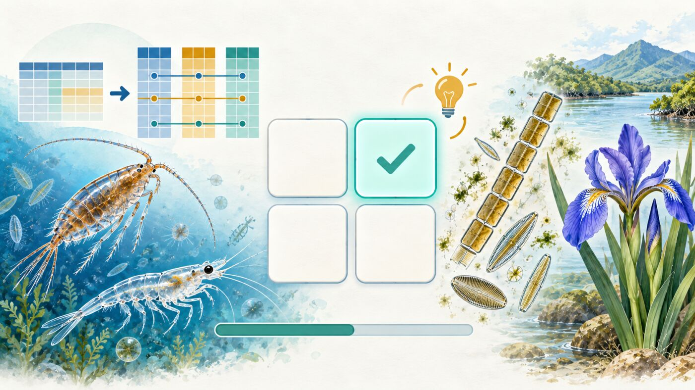

Cuestionario 1 · Bases de Datos Multivariadas
Bioestadística y Diseño Experimental · Semana 3 · 2026-II
Instrucciones
Este cuestionario acompaña el Taller 5 · Bases de Datos Multivariadas y abre el módulo multivariado de la Semana 3. Son 12 preguntas de opción múltiple basadas en las Partes 1 a 5 del taller y en el estudio de caso: lectura de archivos de Excel y de texto, errores típicos de una hoja de cálculo, verbos de tidyverse, formatos largo y ancho, uniones con left_join(), separación de las matrices F, X y Y, categorización de variables continuas, estandarización y transformación de Hellinger, y las réplicas de la hoja «Abundancia» del mesozooplancton.
Cada pregunta tiene una pista opcional y, al responder, una explicación breve; se recomienda usarlas para repasar, no solo para obtener una calificación. El orden de las opciones cambia en cada intento. Es una práctica sin nota; la misma práctica está en Moodle (Cuestionario1_T5) y habilita la entrega del CQ1.
Pregunta 1 de 12
Referencias
Las preguntas de este cuestionario son de elaboración propia para este curso, a partir de las bases de datos del Taller 5 (Vargas-Ospina et al., 2025; Osorio Ávila et al., 2015); no reproducen ejercicios ni datos de las fuentes citadas en el taller.